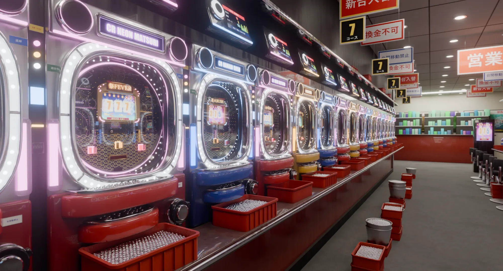
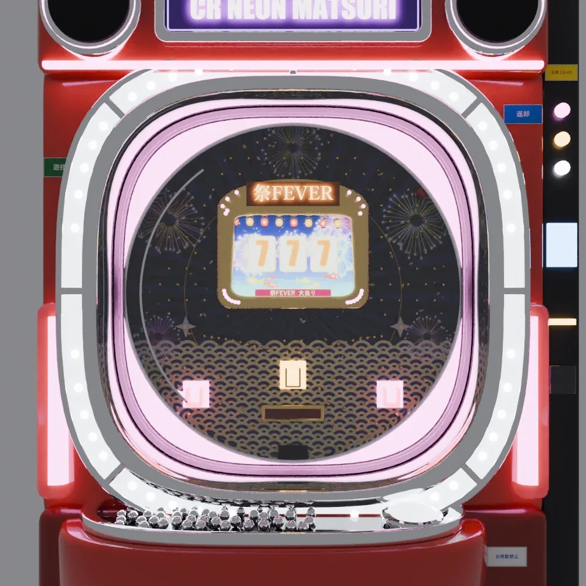
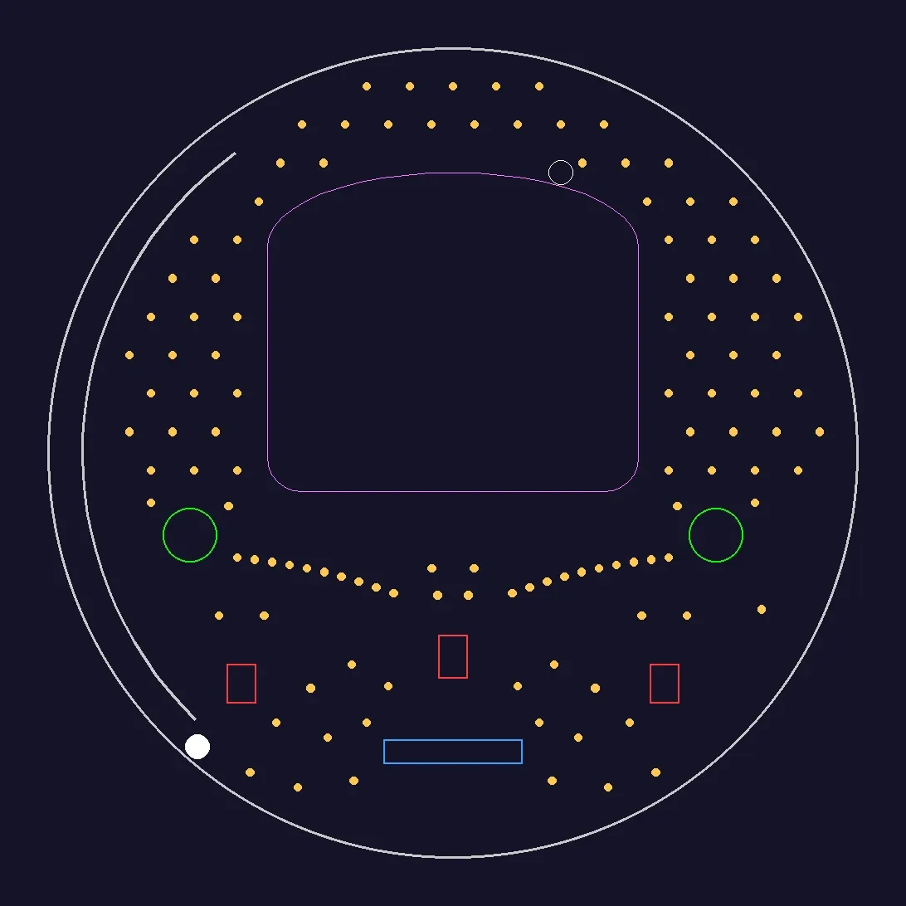
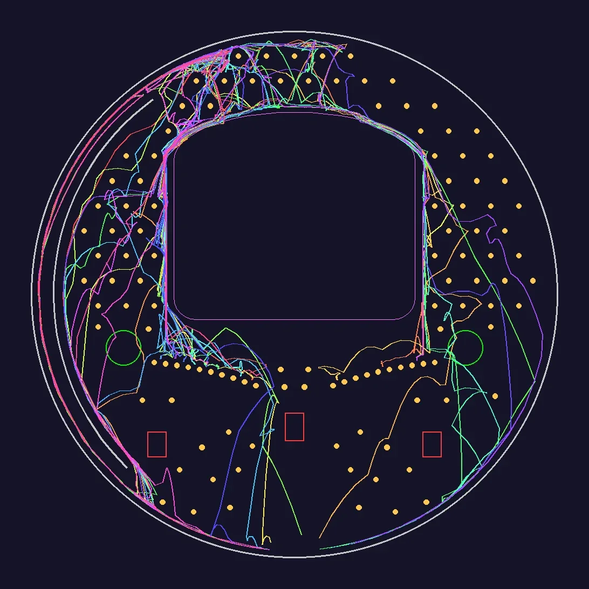
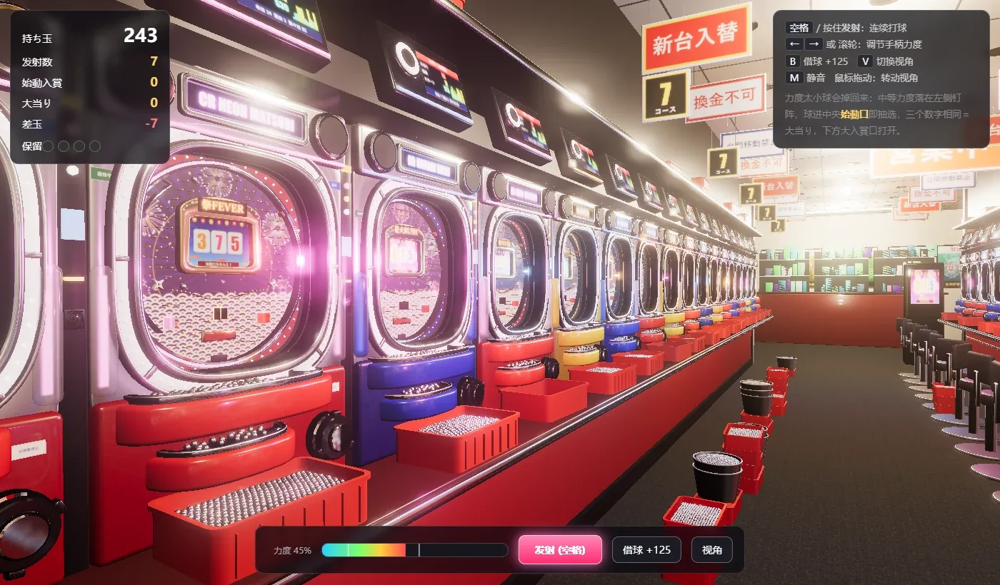

Pachinko Parlor
A scripted, simulated and playable scene, grown from one reference image — and directed, rather than modelled, through an AI coding agent.
- Role
- Direction, reference, prompt iteration, review, acceptance
- Year
- November 2026
- Built with
- Blender + Python, Rapier, Three.js, Claude Code
- Status
- Playable prototype; physics validation incomplete

Eight seconds, nothing hand-modelled.
Desktop recommended — keyboard and mouse. The playable build keeps its original Chinese interface.
A convincing image is not a working scene.
I wanted to know how far prompt-directed scene building can go beyond a good-looking render. Can the result be rebuilt from scripts, obey physics, and be played?
A render can hide everything a real scene needs: where the colliders are, whether a ball can actually reach a pocket, whether anything survives a change. So I used one reference photograph as appearance guidance only, and required every element to come from a script or a data file.
The build scripts, physics code and audio synthesis were written by an AI coding agent under my direction. My part was the direction itself: choosing the reference, iterating the prompts, reviewing, and deciding what counted as done.

The board is data before it is geometry.
A layout script defines 117 pins, the windmills, the pockets and the rails, and writes them to a single JSON file. Blender reads that file to build the machine. The browser reads the same file to build the colliders. What is rendered and what is simulated cannot drift apart.


Stated per object, not per scene.
| Kind | What |
|---|---|
| Rigid bodies | Steel balls (5.5 mm radius, continuous collision detection) and the two windmills on the main machine, each on a hinge. |
| Static colliders | 117 pins, back plate, glass, centre feature, pocket walls and a rubber stop. |
| Analytic constraints | The circular outer rail and the launch rail are solved as arcs, not built from collider segments. |
| Not simulated | The other machines, the room and the balls in trays are static. Camera and LEDs are hand-keyed. |
Simulation step: 1/960 s.
Three things the first attempt got wrong.
Segmented rails make ghost collisions.
A circle made of small boxes has seams, and balls catch on them. Decision: replace the rails with analytic arcs.
The first engine lost speed on the rail.
Balls sliding along the curve slowed abnormally and never reached the board. Decision: use Rapier for both bake and play.
Importing a script rebuilt the scene.
Two modules ran on import and silently reset every material. Decision: guard the imports; verify by re-rendering a frame and diffing it.
The same board, in real time.
The browser version loads the exported models and the same layout file. Launch strength maps to the ball’s initial speed: too weak and it falls back, mid-range plays the left side, high strength plays the right.

What this shows, and what it does not.
In one 29-second baked run.
Including stuck balls that were nudged and removed.
One ball entered the start pocket.
None. The lane pins are spaced closer than a ball.
One source, three outputs
A scene rebuilt from scripts; one layout shared by the offline render and the real-time physics; a film, procedural audio and a playable build from the same data.
The game itself
Balls queue along the lane pins. The main screen shows a fixed image and does not react to play. There is no single command that rebuilds everything from scratch.
These are recorded so the next iteration has a list to fix, not a render to admire.